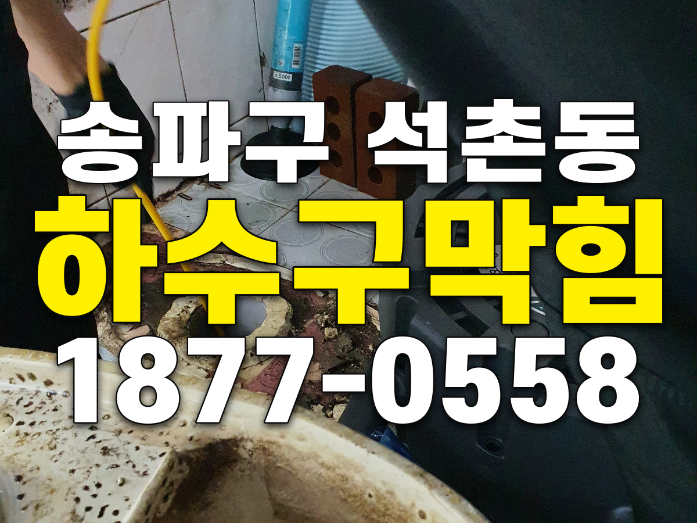
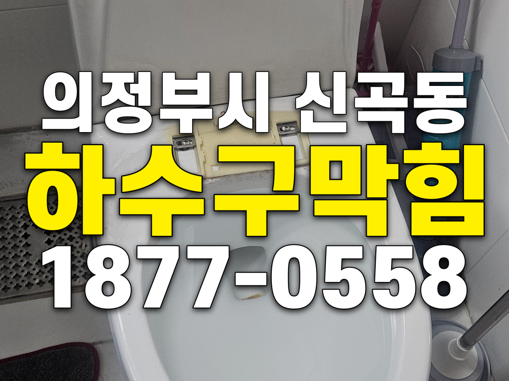
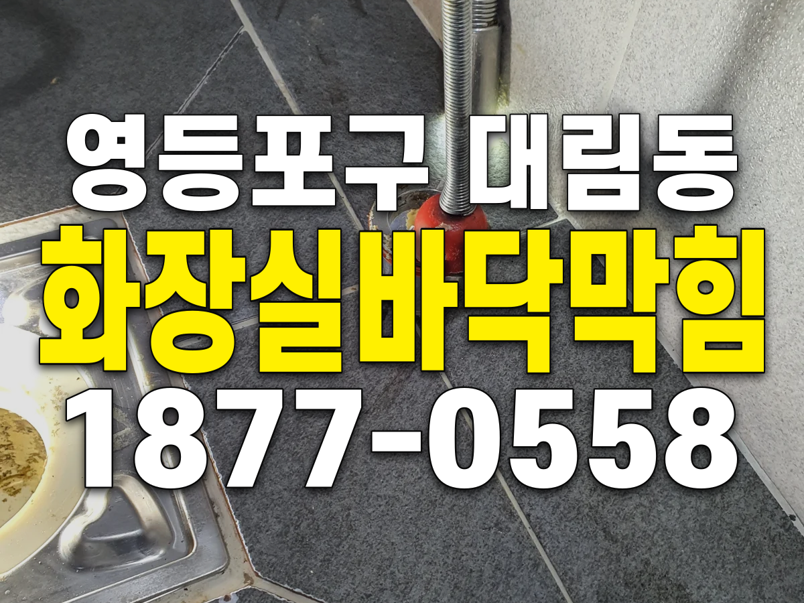
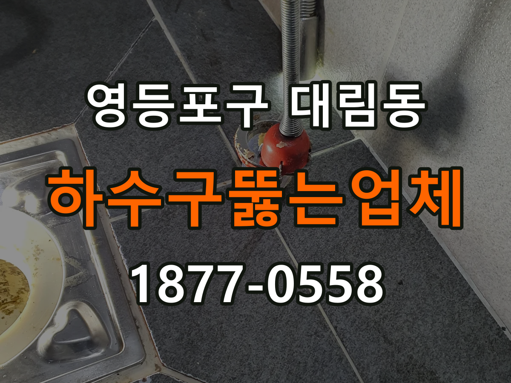
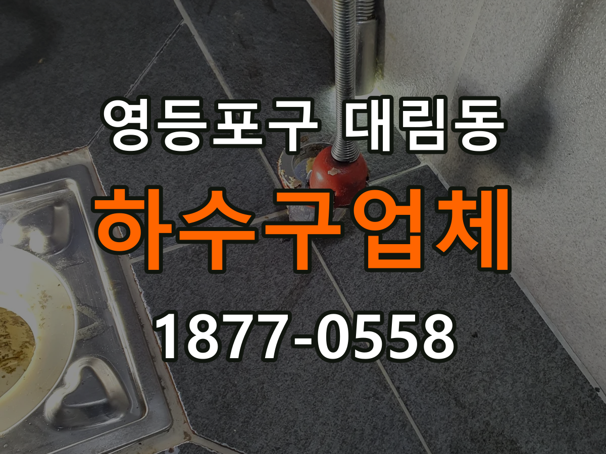
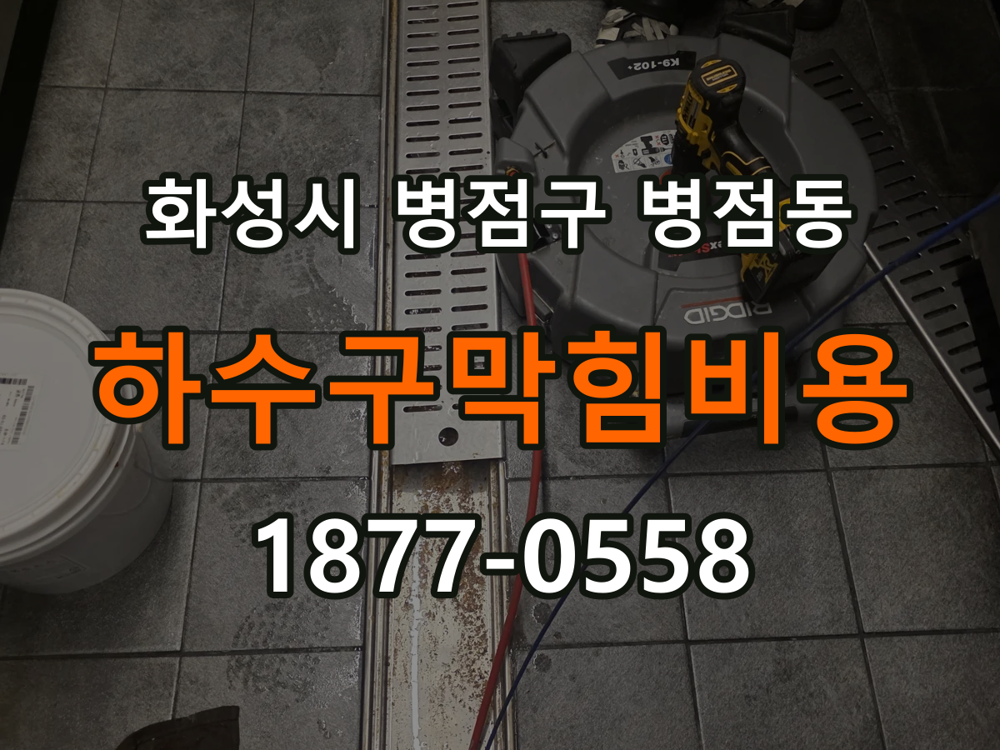
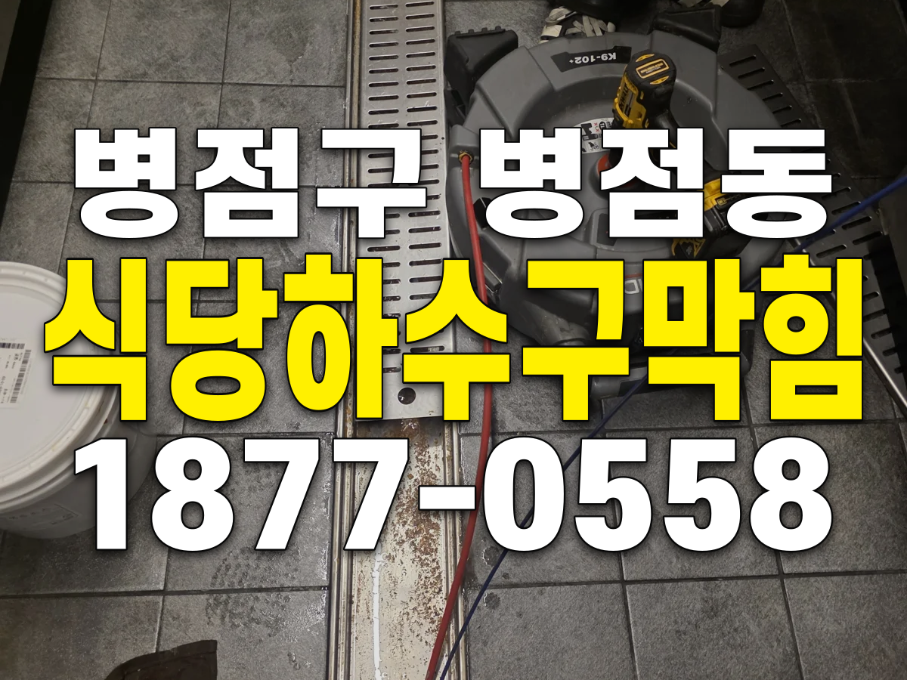
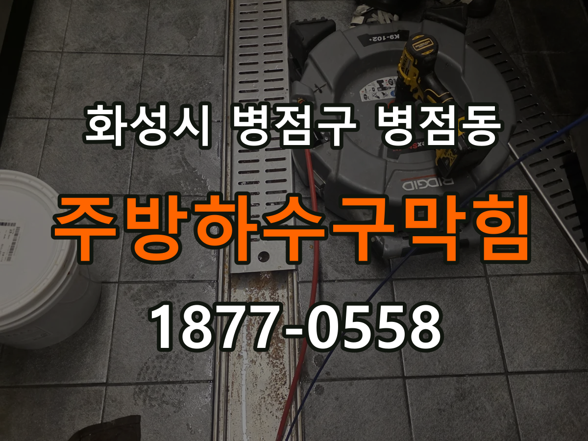
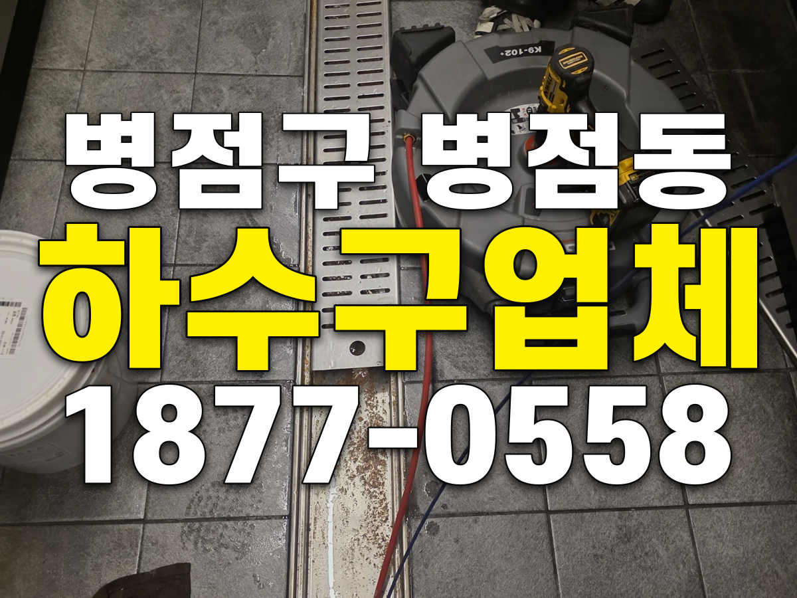
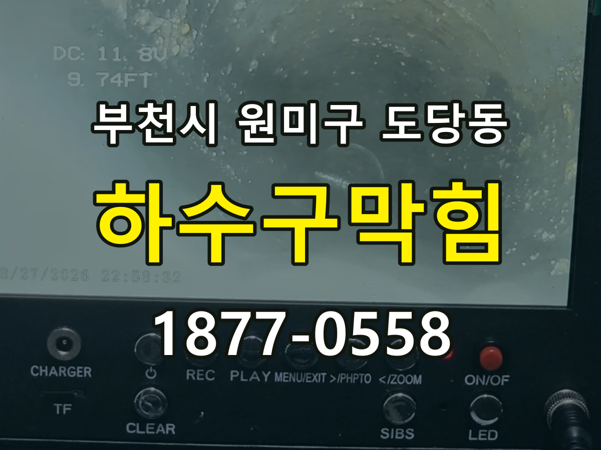

하수구막힘 증상은 원인 구간부터 확인합니다
바닥 배수구 역류, 물이 잘 빠지지 않는 하수구, 여러 배수구의 동시 막힘, 악취와 반복되는 배수 불량 등 같은 하수구막힘 증상이라도 변기·배수구 내부, 연결 배관, 오수관 또는 공용배관처럼 원인이 발생한 위치가 다를 수 있습니다. 신라건축설비는 증상만 보고 작업을 정하지 않고 현장 상태를 확인한 뒤 필요한 작업 범위와 비용 조건을 먼저 안내합니다.
실제 현장에서 확인되는 주요 원인: 기름 슬러지·생활 오염물 축적, 배관 내부 스케일, 오수관·공용배관 구간의 막힘
주요 점검·작업: 배관내시경·샤프트·석션·고압세척과 공용배관 점검
하수구막힘 원인부터 하수구뚫는업체 선택까지
하수구막힘 원인·하수구역류·바닥 배수구 막힘·하수구 물 안내려감·배관막힘·오수관 막힘·공용배관 막힘·고압세척처럼 검색하는 상황은 표현은 달라도 같은 배수 문제에서 시작되는 경우가 많습니다. 신라건축설비는 단순 관통 여부만 보지 않고 증상, 막힘 위치, 이물질 여부와 배관 상태를 함께 확인해 필요한 작업을 판단합니다.
하수구뚫는업체 선택 전 실제 작업사례를 확인하세요
광고 문구만이 아니라 실제로 어떤 증상을 어떤 장비로 진단하고 해결했는지가 중요합니다. 현재 신라건축설비 홈페이지에는 하수구막힘 실제 현장사례 54편이 공개되어 있으며 지역, 원인, 작업 과정과 결과를 확인할 수 있습니다.
지역별 하수구막힘·하수구뚫는업체 실제 출동 기록
최근 하수구막힘 해결사례

송파구 석촌동 하수구막힘, 1층 오수관 비닐·물티슈 제거
변기 탈거 후 오수관을 작업한 석촌동 하수구막힘 사례입니다. 샤프트·스프링 작업으로 비닐과 물티슈를 제거하고 외부 정화조 출수관을 점검했습니다.

의정부시 신곡동 하수구막힘, 변기에 빠진 휴지걸이 봉 제거 사례
의정부시 신곡동 하수구막힘 관련 현장 기록. 실제 작업 대상은 휴지걸이 봉이 빠진 변기였으며, 탈거 후 에어건으로 봉을 회수하고 재설치·정상 통수 확인을 마쳤습니다.
강동구 명일동 하수구막힘 | 싱크대 배수관에 쌓인 기름때 제거 사례
명일동 하수구막힘으로 소개하는 이번 작업 대상은 싱크대 배수관입니다. 배관 안의 많은 기름때가 물길을 좁히고 있어 샤프트 반복 작업과 물을 흘리는 추가 세척으로 배수 기능을 회복했습니다.
강동구 명일동 하수구업체 | 싱크대 배수 점검과 작업 범위 확인
명일동 하수구업체에 싱크대 배수 문제를 문의할 때는 증상과 함께 점검·보양·작업·완료 확인 범위를 살펴보세요. 이번 사례는 신라건축설비의 명일동 기름때 제거 사례를 바탕으로 상담할 항목을 정리합니다.

영등포구 대림동 화장실바닥막힘 | 배관에 빠진 트랩 회수 과정
영등포구 대림동 화장실바닥막힘. 배관 속 트랩을 내시경으로 확인하고 석션과 집게로 회수한 실제 현장을 바탕으로 배관에 빠진 트랩 회수 과정을 안내합니다.

영등포구 대림동 하수구뚫는업체 | 내시경 점검부터 트랩 회수까지
영등포구 대림동 하수구뚫는업체. 배관 속 트랩을 내시경으로 확인하고 석션과 집게로 회수한 실제 현장을 바탕으로 내시경 점검부터 트랩 회수까지의 과정을 안내합니다.

영등포구 대림동 하수구업체 | 점검·견적과 작업 완료 확인 기준
영등포구 대림동 하수구업체. 배관 속 트랩을 내시경으로 확인하고 석션과 집게로 회수한 실제 현장을 바탕으로 점검·견적과 작업 완료 확인 기준을 안내합니다.

화성시 병점구 병점동 하수구막힘비용 | 식당 배수 작업의 견적 확인 항목
화성시 병점구 병점동 하수구막힘비용. 식당 트렌치에서 내시경 점검과 샤프트 작업 후 정상 통수를 확인한 실제 현장을 바탕으로 식당 배수 작업의 견적 확인 항목을 안내합니다.

화성시 병점구 병점동 식당하수구막힘 | 트렌치와 연결 배관 점검 과정
화성시 병점구 병점동 식당하수구막힘. 식당 트렌치에서 내시경 점검과 샤프트 작업 후 정상 통수를 확인한 실제 현장을 바탕으로 트렌치와 연결 배관 점검 과정을 안내합니다.

화성시 병점구 병점동 주방하수구막힘 | 바닥 배수로와 연결 배관 해결 과정
화성시 병점구 병점동 주방하수구막힘. 식당 트렌치에서 내시경 점검과 샤프트 작업 후 정상 통수를 확인한 실제 현장을 바탕으로 바닥 배수로와 연결 배관 해결 과정을 안내합니다.

화성시 병점구 병점동 하수구업체 | 방문 일정·견적·통수 확인 기준
화성시 병점구 병점동 하수구업체. 식당 트렌치에서 내시경 점검과 샤프트 작업 후 정상 통수를 확인한 실제 현장을 바탕으로 방문 일정·견적·통수 확인 기준을 안내합니다.

부천시 원미구 도당동 하수구막힘 | 싱크대 연결 배관에서 확인한 배수 불량
도당동 하수구막힘 사례 중 이번 글은 싱크대와 연결된 배수관의 막힘을 다룹니다. 싱크대 물이 잘 빠지지 않았고, 내시경으로 안쪽의 심한 막힘을 확인한 뒤 샤프트로 물길을 확보했습니다.
서울·경기·인천 하수구막힘 출동
서울 37편 · 경기 16편 · 인천 1편의 실제 기록을 기반으로 지역별 사례를 연결합니다. 새로운 현장사례가 등록되면 해당 서비스와 지역 허브에 함께 누적됩니다.